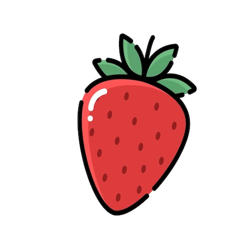
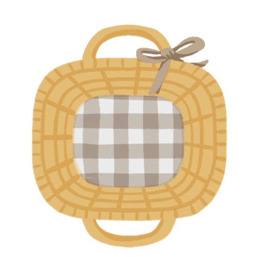

☰
What's in Season?
Home
All Items
About
Mission
×
Home
All Items
About
Mission
What's in Season?
Late April
Early January
Late January
Early February
Late February
Early March
Late March
Early April
Late April
Early May
Late May
Early June
Late June
Early July
Late July
Early August
Late August
Early September
Late September
Early October
Late October
Early November
Late November
Early December
Late December
All
Fruits
Vegetables
Nuts
Year Round

Placeholder
Placeholder

No items to show